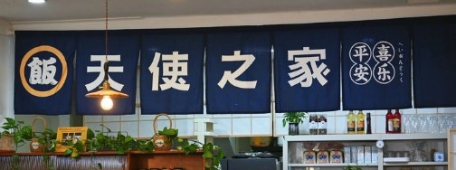
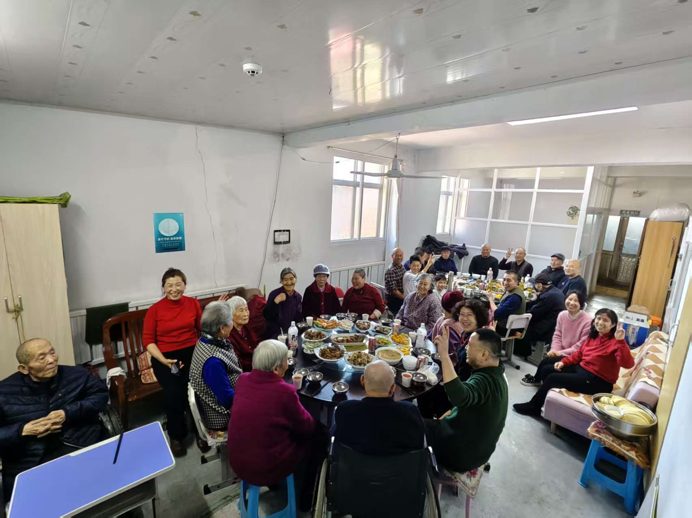
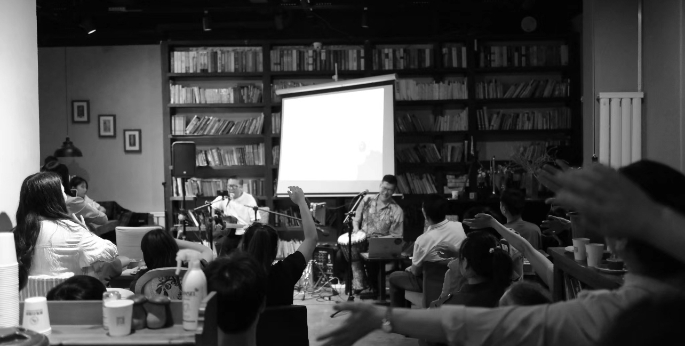
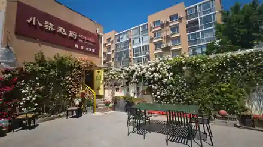

在世界不同角落，
仍有人默默用爱同行。
他们正在陪伴孩子、照顾老人、
为陌生人预备热饭，
也在黑夜里继续点灯。



他们，在城市的喧嚣中驻足， 凭着微弱却坚韧的光， 守候了一座二十二载的属灵港湾。 一间咖啡书房，每一缕墨香，每一杯温热， 是心灵的共振，也是无声的见证......
欲购书或小坐 →
在北京的一处社区里，有这样一间小小的私厨。 店主一边用心炒菜、慢炖牛肉，一边读书、听歌、种花。 每天现炖的大块牛肉，配上两样素菜与热米饭。 对他而言，踏实做好每一碗饭，不仅是谋生， 也是以诚实、耐心与温暖款待身边的人。
左右滑动 · 循环探索